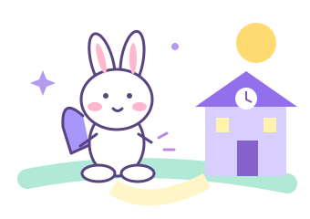

LET’S GO! 일본어 모험다윤이의
다윤이의
두근두근 일본어 ✦
토끼 루루와 함께, 오늘도 미션 출발! 🐾
🐰 다윤 탐험가미션 준비 중
MISSION 01 · 변신 마법
🌈 동사가 변신해요!
카드를 듣고 따라 하면 별 하나 획득!
💡 루루의 비밀 힌트 · 눌러보기
PICTURE PLAY · 그림으로 말해요
🎒 어디로 가볼까?
옆으로 넘기고, 그림 속 일본어를 들어봐!
← 옆으로 쓱! 여섯 가지 이야기 →
🎯 도전! 일본어 탐험왕
뜻을 보고 알맞은 일본어를 골라봐.
🌙 잠들기 전, 미션 3!
잠들기 전 딱 3분, 아빠랑 오늘의 일본어를 꺼내봐.
학습 기록은 이 브라우저에 저장돼요.
다른 기기와 공유되지 않으며, 방문 기록 삭제 시 지워질 수 있어요.